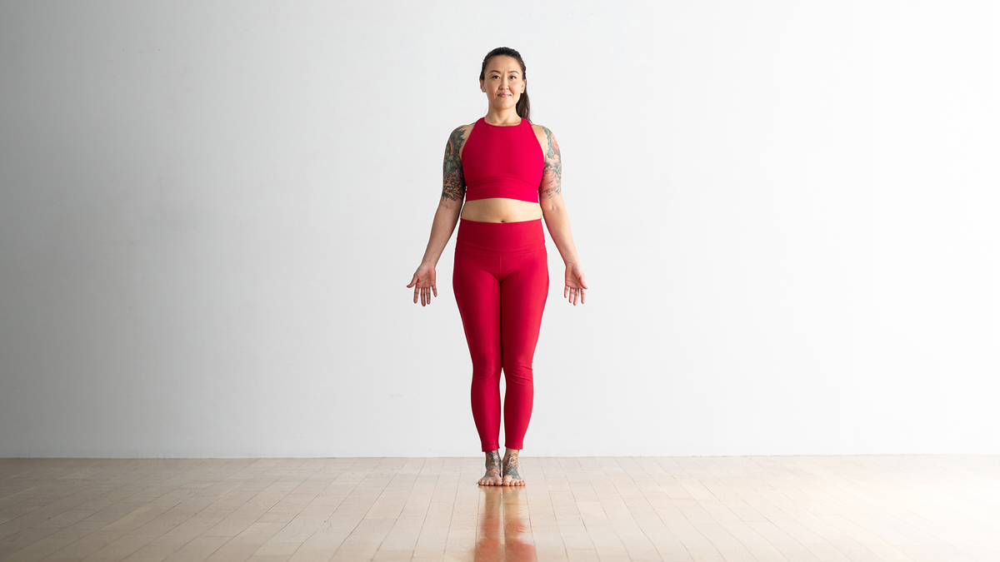

Basic yoga pose
1.Mountain Pose
How to do it
Stand with your feet together or hip-width apart. Ground down through the four corners of your feet. Roll your shoulders away from your ears, draw your shoulder blades down your back, and lift the crown of your head.
The benefits
It may seem like you’re, well, just standing there, but bear with us. This is the blueprint for all other poses. It promotes balance and directs your attention to the present moment.
2. Chair Pose

How to do it
Start in Mountain Pose. As you inhale, raise your arms, spread your fingers, and reach up through your fingertips. As you exhale, sit back and down as if sitting into a chair.
The benefits
This heating standing pose (give it a minute, you’ll feel the burn) strengthens your legs, upper back, and shoulders. As a bonus, you’ll have an opportunity to practice patience as your thighs work hard. Just remember to breathe.
3.Down Dog on a chair

How to do it
Place your hands on the back of a chair with palms shoulder-distance apart. Step your feet back until they align under hips, creating a right angle with your body, spine parallel with the floor.
The benefits
This modification shares the same benefits as the classic pose — stretching the hamstrings, opening the shoulders, and creating length in the spine — without all the weight on your upper body.
4. Downward-Facing Dog

How to do it
From all fours, walk your hands 6 inches in front of you. Tuck your toes and lift your hips up and back to lengthen your spine. If your hamstrings are tight, keep your knees bent in order to bring your weight back into the legs.
The benefits
This classic pose opens your shoulders, lengthens your spine, and stretches your hamstrings. Since your head is below your heart, the mild inversion creates a calming effect.
5. Warrior II

How to do it
Stand with feet wide, 3–4 feet apart. Shift your right heel out so your toes are pointing slightly inward. Turn your left foot out 90 degrees. Line up your left heel with the arch of your right foot.
The benefits
A pose with “warrior” in its name may not sound very zen, but this standing pose can help calm and steady your mind. Tougher than it looks, it also strengthens your legs and ankles while increasing stamina.
6. Triangle Pose

How to do it
Stand with feet wide, 3–4 feet apart. Shift your right heel out so your toes are pointing slightly inward. Turn your left foot out 90 degrees. Line up your left heel with the arch of your right foot.
The benefits
While this pose can be challenging for those with tight muscles, it will help promote balance, stretch the hamstrings and inner thighs, and create a feeling of expansion in the body.
7. Tree Pose

How to do it
As you inhale, shift the weight into your left foot and lift your right foot an inch off the floor. Using your right hand, bring the foot to your shin or inner thigh. Avoid placing your foot directly on the knee.
The benefits
This pose helps improve concentration and your ability to balance by strengthening the arches of the feet and the outer hips.
8. Bound Ankle Pose

How to do it
Sitting on the floor, bend knees and open them out to the side like a book. Join the soles of your feet together while sitting upright.Place fingertips on the floor directly behind you and lengthen up through the spine.
The benefits
You’ll give your inner thighs and groin a nice stretch, while the forward bend creates a calming, cooling effect.
9. Seated Forward Fold

How to do it
Sit and straighten your legs out in front of you, grounding your thighs into the floor. Hinge at the hips to elongate your torso over your thighs. Grab hold of the outer edges of your feet.
The benefits
This feel-good fold elongates the back of your body, lengthens your spine, and stretches your hamstrings.
10. Plank Pose

How to do it
Start in Downward-Facing Dog. Shift forward so your shoulders are stacked over your wrists. Draw your navel in toward your spine and keep your hips from dropping.
The benefits
Considered one of the best moves for core strength, Plank Pose strengthens your abdominals and promotes stability.